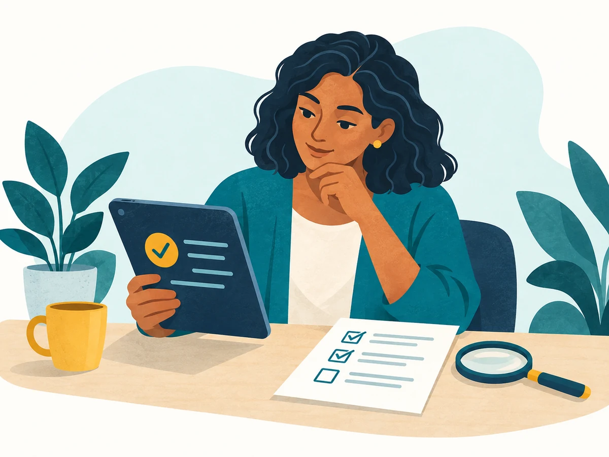

Trust, transparency, and AI
My awareness self-check
Eight everyday situations about using AI carefully and treating applicants fairly.

Choose what you would do in each situation. You will get a score out of eight, a graph of your answers, and a few suggestions for improvement. This is a practice activity, not a test of your qualifications.
Your answers stay on this page. They are not sent to anyone or saved automatically.